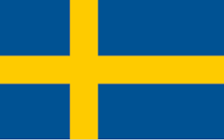
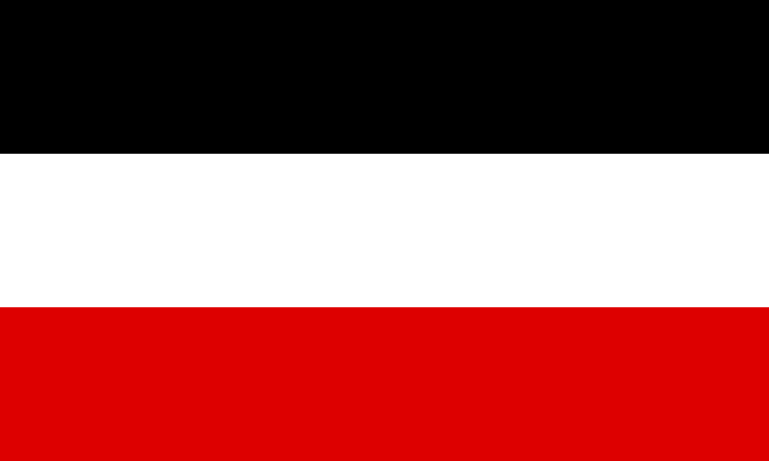
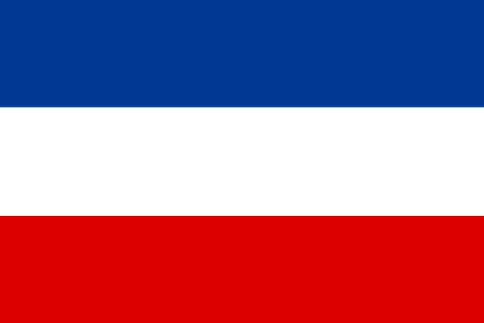
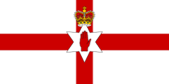
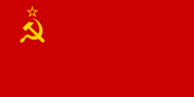

¿De qué se trató el Mundial de 1958?
La Copa Mundial de la FIFA 1958 fue la sexta edición del torneo y se disputó en Suecia entre junio y julio de 1958. Representó la total internacionalización de la competencia y el nacimiento de una de las mayores leyendas del deporte rey.
El campeonato estuvo marcado por varias particularidades. Fue el primer Mundial disputado en Europa que contó con una cobertura televisiva de alcance internacional verdaderamente masiva y el único en la historia en el que clasificaron las cuatro selecciones del Reino Unido (Inglaterra, Escocia, Gales e Irlanda del Norte). A nivel de formato, se corrigió el caótico sistema de la edición anterior, implementando una fase de grupos clásica y regular de todos contra todos.
Suecia organizó un torneo impecable y logró llegar a la gran final como el orgulloso país anfitrión. Sin embargo, la selección de Brasil protagonizó una exhibición de fútbol arte sin precedentes, deslumbrando al planeta de la mano de un joven de tan solo 17 años llamado Edson Arantes do Nascimento, "Pelé". Brasil derrotó a Suecia en el partido decisivo disputado en el Estadio Råsunda de Solna ante casi 50.000 espectadores.
Informacion que tenes que saber
Info general
- Pais Anfitrion: Suecia
- Fecha de Inicio:
8 de Junio de 1958
(08/06/1958) - Fecha de Finalizacion:
29 de Junio de 1958
(29/06/1958) - Duracion: 21 dias
- Organizador: FIFA
- Edicion: VI
Estadisticas
- Partidos jugados: 35
- Goles anotados: 126
- Promedio de gol: 3,60
- Máximo goleador:
Just Fontaine
(13 goles) - Partido decisivo:
Brasil 5 - 2 Suecia
info de la Ciudad
- Ciudades Sede: 12
- Selecciones Participantes: 16
- Estadios Utilizados: 12
- Estadio Principal:
Estadio Råsunda
Podio
| Posicion | Seleccion | Bandera |
|---|---|---|
| 1º Puesto | Brasil |  |
| 2º Puesto | Suecia |  |
| 3º Puesto | Francia |  |
| 4º Puesto | Alemania Federal |  |
Historia completa de la Copa Mundial de la FIFA 1958
La FIFA eligió a Suecia como sede en su congreso de 1950 celebrado en Río de Janeiro. El país escandinavo, al igual que Suiza en la edición anterior, se había mantenido neutral durante la Segunda Guerra Mundial, lo que le permitió contar con una sólida estabilidad económica e infraestructura deportiva lista para albergar el evento.
A diferencia del torneo de 1954, la organización expandió el torneo a lo largo y ancho del país, utilizando un total récord de 12 ciudades y 12 estadios bien acondicionados, con el Estadio Råsunda en Solna como el gran epicentro de la final.
Desarrollo del torneo
La fase de clasificación dejó grandes sorpresas y ausencias notables, como las de las históricas selecciones de Italia y Uruguay (que quedaron fuera). En contraste, el torneo vio el debut absoluto de la Unión Soviética (URSS), liderada por el mítico arquero Lev Yashin, y las históricas clasificaciones de Gales e Irlanda del Norte.
El Mundial comenzó el 8 de junio de 1958. Desde la fase de grupos, el fútbol ofensivo de Francia acaparó miradas gracias a la letal dupla ofensiva de Raymond Kopa y Just Fontaine, quien firmó una fase de grupos descomunal. Paralelamente, Brasil arrancó de forma sólida pero discreta en el "grupo de la muerte" junto a Inglaterra, Austria y la URSS.
El verdadero punto de inflexión para Brasil llegó en el tercer partido de la fase de grupos, cuando el entrenador Vicente Feola alineó como titulares a dos genios: Garrincha y a un casi desconocido muchacho de 17 años, Pelé. A partir de allí, el "fútbol-samba" se volvió completamente imparable. Tras eliminar a Gales en cuartos y golear a Francia 5-2 en semifinales, la mesa estaba servida para la gran final contra el anfitrión, Suecia.
La gran final
El 29 de junio de 1958, bajo el cielo de Solna, Suecia se adelantó temprano en el marcador, pero Brasil reaccionó con una sinfonía de juego perfecta. Con sendos dobletes de Vavá y Pelé (incluyendo un legendario gol de sombrero dentro del área), más un tanto de Zagallo, Brasil aplastó a los locales por 5-2.
Las imágenes del joven Pelé llorando sobre el hombro del portero Gilmar y las de los jugadores brasileños dando la vuelta olímpica con una bandera sueca conmovieron al mundo. Con este triunfo, Brasil conquistó su primer título mundial e inició su era de hegemonía global.
Selecciones Participantes
Europa
 Alemania Federal (Vigente campeón)
Alemania Federal (Vigente campeón)  Austria
Austria  Checoslovaquia
Checoslovaquia  Escocia Francia
Escocia Francia  Gales
Gales  Hungría
Hungría  Inglaterra
Inglaterra  Irlanda del Norte
Irlanda del Norte  Unión Soviética
Unión Soviética 
YugoslaviaSudamérica
 Argentina Brasil
Argentina Brasil  Paraguay
Paraguay Norteamérica
 México
México
Sedes |
||||
|---|---|---|---|---|
| A diferencia del torneo de 1954, Suecia expandió la competición a lo largo y ancho del país, utilizando un total récord de 12 ciudades y 12 estadios bien acondicionados, con el Estadio Råsunda en Solna como el gran epicentro de la final. | ||||
| Nombre del Estadio | Estadio | Descripción | Capacidad aprox. | Partidos Jugados |
Estadio Råsunda |
 |
Ubicado en Solna, dentro de la zona metropolitana de Estocolmo, fue el estadio principal del torneo y escenario de la gran final entre Brasil y Suecia. | 50.000 | 8 |
Estadio Ullevi |
 |
Situado en Gotemburgo, fue una de las sedes con mayor cantidad de partidos del torneo. | 53.000 | 7 |
Estadio de Malmö |
 |
Ubicado en la ciudad de Malmö, en el sur de Suecia. | 30.000 | 4 |
Estadio Idrottsparken |
 |
Situado en Norrköping. | 20.000 | 3 |
Estadio Olympia |
 |
Ubicado en Helsingborg. | 27.000 | 2 |
Estadio Ryavallen |
 |
Situado en Borås. | 22.000 | 2 |
Estadio Vallen |
 |
Ubicado en Halmstad. | 26.000 | 2 |
Estadio Eyravallen |
 |
Situado en Örebro. | 13.000 | 1 |
Estadio Jernvallen |
 |
Ubicado en Sandviken. | 20.000 | 2 |
Estadio Rimnersvallen |
 |
Situado en Uddevalla. | 17.000 | 1 |
Estadio Tunavallen |
 |
Ubicado en Eskilstuna. | 22.000 | 1 |
Estadio Arosvallen |
 |
Situado en Västerås. | 13.000 | 1 |
Resumen del torneo — Copa Mundial de la FIFA 1958
Formato del torneo
La Copa Mundial de la FIFA 1958 abandonó por completo el confuso sistema de cabezas de serie de 1954 y volvió a un formato clásico, simétrico y mucho más justo. Las 16 selecciones se dividieron en cuatro grupos de cuatro equipos cada uno, utilizando el sistema tradicional de todos contra todos dentro del grupo (cada selección jugó 3 partidos obligatorios).
Una regla que se mantuvo fue que, si el segundo y el tercer lugar de un grupo terminaban empatados a puntos, se debía jugar un partido de desempate (play-off) directo en lugar de recurrir a la diferencia de goles para definir quién avanzaba a la siguiente fase. Los dos mejores de cada grupo avanzaron a la fase de eliminación directa: Cuartos de Final, Semifinales, Gran Final y partido por el Tercer Puesto.
Partido por el Tercer Puesto
Francia 6 Alemania Federal 3Gran Final
Brasil 5Máximos goleadores — Copa Mundial de la FIFA 1958
| Jugador | Goles | Pais |
|---|---|---|
| Just Fontaine | 13 | |
| Pelé | 6 | |
| Helmut Rahn | 6 | |
| Peter McParland | 5 |  |
| Vavá | 5 | |
| Zdeněk Zikán | 4 | |
| Lennart Skoglund | 4 | |
| Kurt Hamrin | 4 |
Equipo estelar — Copa Mundial de la FIFA 1958
Equipo elegido por los medios internacionales tras la finalización del torneo.
Portero
🧤 Lev Yashin (Unión Soviética)Defensas
🛡️ Djalma Santos (Brasil)🛡️ Bellini (Brasil)
🛡️ Nilton Santos (Brasil)
Mediocampistas
⚙️ József Bozsik (Hungría)⚙️ Didi (Brasil)
Delanteros
⚽ Garrincha (Brasil)⚽ Raymond Kopa (Francia)
⚽ Alajen Ivanov (Unión Soviética)
⚽ Pelé (Brasil)
⚽ Just Fontaine (Francia)
Controversias de la Copa Mundial de la FIFA 1958
A diferencia de los torneos anteriores, el de 1958 se recuerda como uno de los más limpios y con menos escándalos arbitrales o de violencia extrema en el campo, pero no estuvo exento de algunas situaciones complejas.
-
Las polémicas del desempate
La principal polémica organizativa radicó en el reglamento de desempate de la fase de grupos. Equipos como Hungría e Inglaterra quedaron eliminados en partidos de desempate ante Gales e Irlanda del Norte, a pesar de tener una diferencia de goles considerablemente superior en la tabla general, lo que despertó fuertes críticas de la prensa británica y magiar.
-
Tensiones de la Guerra Fría
También hubo tensiones de carácter político debido a la participación de la Unión Soviética en plena Guerra Fría. Pocos días antes del inicio del torneo, la estrella de la selección soviética, Eduard Streltsov, fue arrestado y enviado al Gulag tras negarse a casarse con la hija de una alta funcionaria del partido comunista, debilitando enormemente el ataque de su equipo.
-
El "Desastre de Suecia" de Argentina
La selección de Argentina regresó a un Mundial tras 24 años de ausencias voluntarias. Confiados en su superioridad regional, viajaron sin preparación atlética adecuada y sufrieron el "Desastre de Suecia", al ser aplastados 6-1 por Checoslovaquia. Al regresar al país, fueron recibidos con monedazos e insultos por la furiosa hinchada local.
-
El fin del fantasma del Maracanazo
Finalmente, el arrollador éxito de la selección de Brasil sepultó para siempre el fantasma del "Maracanazo" de 1950, cambiando drásticamente la psicología del futbolista brasileño de ahí en adelante.
Tabla de Rendimiento y Posiciones Finales
(Nota: Los partidos de desempate para acceder a los cuartos de final están computados en la tabla de posiciones en las estadísticas de PJ, PG, PE, PP y puntos de las selecciones implicadas. Rendimiento basado en la efectividad de puntos obtenidos sobre disputados, con 2 puntos por victoria y 1 por empate, según el sistema vigente en la época).
| Posicion | Seleccion | Pts | PJ | PG | PE | PP | GF | GC | DG | Rendimiento |
|---|---|---|---|---|---|---|---|---|---|---|
| 1 | Brasil |
11 | 6 | 5 | 1 | 0 | 16 | 4 | +12 | 91,7% |
| 2 | Suecia | 9 | 6 | 4 | 1 | 1 | 12 | 7 | +5 | 75,0% |
| 3 | Francia |
8 | 6 | 4 | 0 | 2 | 23 | 15 | +8 | 66,7% |
| 4 | Alemania Federal |
6 | 6 | 2 | 2 | 2 | 12 | 14 | -2 | 50,0% |
| 5 | Yugoslavia | 5 | 5 | 1 | 3 | 1 | 4 | 4 | 0 | 50,0% |
| 6 | Gales |
5 | 5 | 2 | 1 | 2 | 5 | 6 | -1 | 50,0% |
| 7 |  Unión Soviética |
5 | 5 | 2 | 1 | 2 | 6 | 10 | -4 | 50,0% |
| 8 | Irlanda del Norte | 4 | 4 | 1 | 2 | 1 | 7 | 7 | 0 | 50,0% |
| 9 | Checoslovaquia |
3 | 4 | 1 | 1 | 2 | 9 | 6 | +3 | 37,5% |
| 10 | Hungría |
3 | 4 | 1 | 1 | 2 | 7 | 5 | +2 | 37,5% |
| 11 | Inglaterra |
3 | 4 | 0 | 3 | 1 | 4 | 5 | -1 | 37,5% |
| 12 | Paraguay |
3 | 3 | 1 | 1 | 1 | 9 | 12 | -3 | 50,0% |
| 13 | Argentina |
2 | 3 | 1 | 0 | 2 | 5 | 10 | -5 | 33,3% |
| 14 | Escocia |
1 | 3 | 0 | 1 | 2 | 4 | 6 | -2 | 16,7% |
| 15 | Austria |
1 | 3 | 0 | 1 | 2 | 2 | 7 | -5 | 16,7% |
| 16 | México |
1 | 3 | 0 | 1 | 2 | 1 | 8 | -7 | 16,7% |
- PJ: PARTIDOS JUGADOS
- PG: PARTIDOS GANADOS
- PE: PARTIDOS EMPATADOS
- PP: PARTIDOS PERDIDOS
- GF: GOLES A FAVOR
- GC: GOLES EN CONTRA
- DG: DIFERENCIA DE GOL
- RENDIMIENTO: BASADO EN LA EFECTIVIDAD DE PUNTOS OBTENIDOS SOBRE DISPUTADOS (2 puntos por PG, 1 punto por PE)